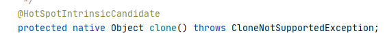

| 创建时间： | 2020/05/20 15:36 |
| 作者： | lzr |
今天学设计模式了解到了原型模式，在使用的时候依赖于将原型进行复制。今天就来简单聊一下在java中的clone完成复制。
我们翻阅Object类的方法，可以找到一个native方法clone，它会返回对象的逐域拷贝。

对于普通对象来说，是不可以直接使用继承自Object的clone方法的。可以看到clone方法是一个protected方法。普通对象想使用clone方法，就一定要实现cloneable接口。
clone方法目的在于创建一个对象的拷贝，这个“拷贝”的准确含义不同的类不同。一般含义下，遵守下面三条表达式：
x.clone()!=x;
x.clone().getClass()==x.getClass();
x.clone().equals(x);
注意，这不是规范，而是一种约定，编写代码时最好遵守这样的约定。
看下面这个类：
public class Solution implements Cloneable{
String name;
@Override
protected Solution clone() throws CloneNotSupportedException {
return (Solution) super.clone();
}
}
很简单，实现了Cloneable接口后，重写继承自父类的clone方法，并在方法体内调用原生的clone方法。这样，就实现了最简单的拷贝。
clone方法从底层看，它直接把原对象的数据复制一份。也就是说，如果原对象的数据域包含对其他对象的引用，复制的时候，也会同样复制相同的引用。如果数据域的对象是不可变的，那这样本身就很好，可以节省空间。
但是如果该对象是可变对象，那么这次的clone完成的就是一个浅拷贝。源对象和复制过的对象
看代码：
class MyString{
String val;
void setVal(String s){
val =s ;
}
public String getVal() {
return val;
}
void show(){
System.out.println(val);
}
}
public class Solution implements Cloneable{
MyString ms;
Solution(String s){
ms = new MyString();
ms.setVal(s);
}
void show(){
ms.show();
}
void setS(String s){
ms.setVal(s);
}
@Override
protected Solution clone() throws CloneNotSupportedException {
return (Solution) super.clone();
}
public static void main(String[] args) throws CloneNotSupportedException {
Solution so = new Solution("lzr");
so.show();
Solution s2 = so.clone();
s2.setS("nbnb");
s2.show();
so.show();
}
}
在这个例子中，最后的两个输出，本希望一个输出"lzr"，另外一个输出"nbnb"。但是让人难过的是，这两个对象引用的是同一个MyString。这个问题怎么解决呢？
其实很简单，让MyString也可以clone，然后将Solution的clone返回的对象中，ms变成ms.clone();
看代码：
class MyString implements Cloneable{
String val;
void setVal(String s){
val =s ;
}
public String getVal() {
return val;
}
void show(){
System.out.println(val);
}
@Override
protected MyString clone() throws CloneNotSupportedException {
return (MyString) super.clone();
}
}
在Solution类中，
@Override
protected Solution clone() throws CloneNotSupportedException {
Solution s = (Solution)super.clone();
s.ms = s.ms.clone();
return s;
}
这样，就可以实现深拷贝了！
当数据域没有实现Cloneable接口时，是不可以访问它的clone方法的。那我们此时可以考虑不使用clone，而参考c++，实现一个“拷贝构造器”
例如这种：
Solution(Solution s){
this.ms = new MyString();
ms.setVal(s.ms.getVal());
}
简简单单，一个拷贝就好了。
clone方法的设计其实很难用，如果使用clone方法，记得要考虑周全。